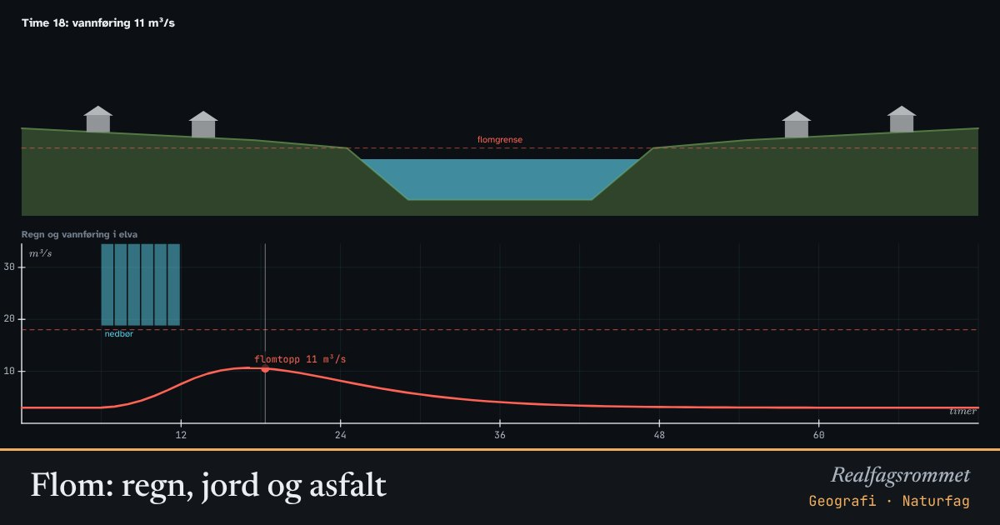

Flom: regn, jord og asfalt
Når det regner mye på kort tid, renner vannet ut i elva. Hvor mye som renner av, og hvor fort, avhenger av bakken. Asfalt og tak slipper alt vannet rett ut, mens skog og jord holder på det.
Start animasjonen
Formler
Om animasjonen
Grafen viser regnet (blå søyler ovenfra) og vannføringen i elva (rød kurve) i et nedbørfelt på 20 km². Den stiplede linjen viser når elva går over sine bredder.
Avrenningskoeffisienten er andelen av regnet som renner rett av. Asfalt og tak gir nesten 1, mens tørr skogsjord kan suge opp det meste. Er jorda allerede mettet etter mye regn, renner mer av.
Tette flater gjør også at vannet kommer raskere. Flomtoppen blir både høyere og kommer tidligere. Derfor bygger byer regnbed, grønne tak og fordrøyningsbasseng.
Klimaendringene gir oftere kraftig nedbør i Norge. Prøv å øke nedbøren med 20 % og se hvor mye høyere flomtoppen blir.
Prøv dette
- Hvor mange prosent tette flater må nedbørfeltet ha før det blir flom med standardverdiene?
- Sammenlign flomtoppen etter 60 mm regn på tørr og på vannmettet jord.
- Hvorfor kommer flomtoppen tidligere i en by enn i et skogsområde?
- Foreslå tre tiltak en kommune kan gjøre for å redusere flomfaren.
Kompetansemål
- Geografi: Naturfarer: flom og skred
Mer om klima, miljø og bærekraft
- Drivhuseffekten og jordas strålingsbalanse
- Karbonkretsløpet og CO₂ i atmosfæren
- Havforsuring: CO₂ gjør havet surere
- Klimaendringer og artenes utbredelse
- Miljøgifter hoper seg opp i næringskjeden
- Rovdyr og byttedyr
- Energistrøm og næringskjeder
- Grønn kjemi: atomøkonomi
- Årstider, dagslengde og solinnstråling
- Regnskygge og føhn: hvorfor Bergen er våtere enn Oslo